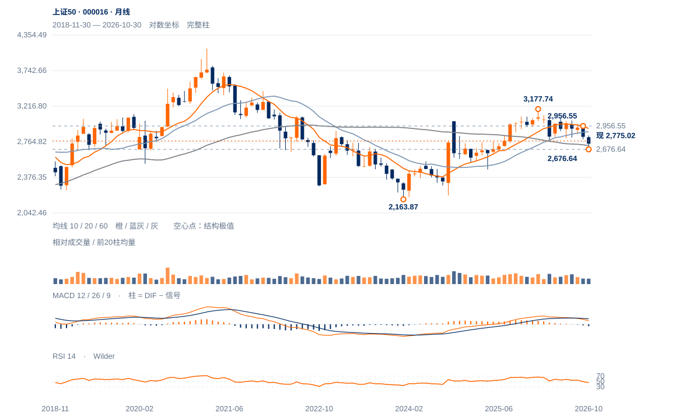

防守相对领先
局部守位证据优于多数指数，当前应按2777附近拉锯处理，不能仅凭微幅低于颈线判定明显失败。绝对趋势仍需2814上方保持才能升级。
局部守位证据优于多数指数，当前应按2777附近拉锯处理，不能仅凭微幅低于颈线判定明显失败。绝对趋势仍需2814上方保持才能升级。
未来2—6周优先考虑2677—2885区间内的防守修复。2814原两日过滤通过后，仍需检验2885附近20月均衡；周收高于2957才明显改变中期下降结构。
未来1—3个月以2670—2720为长线承接试验区。守住并形成较高周谷，才支持向2925—2957扩展；连续两周收低2670则长期防守区域失效，应转为更弱的区间判断。

展开图表 ↗2021年4110.18的大高点仍远在上方；今年1月3177.74之后再次走低，不能把近期抗跌等同长期牛市重启。2024低点2163.87至3177.74的上涨已回吐39.72%。2670.80半幅回撤与200周均线2675.31、10月实际低点2676.64接近，60月均线2720.48也落在附近，形成可检验的长期承接区域。
1月3178、5月3060、7月3026、8月2981、9月2957的高点依次降低，周线调整具有持续性。11月2715.72高于2676.64，说明局部卖方推进减弱；但只在2777附近拉锯，尚未打破中期较低高点序列。相对强势来自跌幅较小，绝对方向仍需价格突破确认。
较高低点与2776.59回抽支持局部防守；2813.90上方保持，是绝对走势升级的下一步。周线较低高点链条仍在。
11月3日2715.72高于10月23日2676.64约1.46%，两低点间OBV增加约176亿股；低点抬高得到量价配合。
现收2775.02，距2776.59颈线仅1.56点、约0.05个ATR。12日实体吞噬后13日继续小幅上收，不能与连续弱收的成长指数作同一解释。
近20日绝对涨幅约0.24%，相对沪深300的比值升4.09%；20日OBV方向余额为正。但周收仍低于20周均线，防守优势尚未转为中期上涨。
重新保持2777，随后满足原2814连续两日及回测要求。
先看2753，2716是较高低点守位；2677是原总底线。
低点抬高与OBV改善是真实反证；如果2777回抽后直接推动2814突破，防守优势可能先于大盘转换成绝对上涨。
| 周期 | 最后完整柱 | 图示柱数 | RSI14 | ATR14 | MACD柱 |
|---|---|---|---|---|---|
| 日线 | 2026-11-13 | 185 | 46.48874 | 34.72309 | 4.61669 |
| 周线 | 2026-11-13 | 156 | 39.7037 | 81.89322 | -10.43862 |
| 月线 | 2026-10-30 | 96 | 45.77019 | 173.71734 | -26.47006 |
国内完整周线至11月13日；11月月线进行中。指数价格不复权，长期历史按实际可用起点。